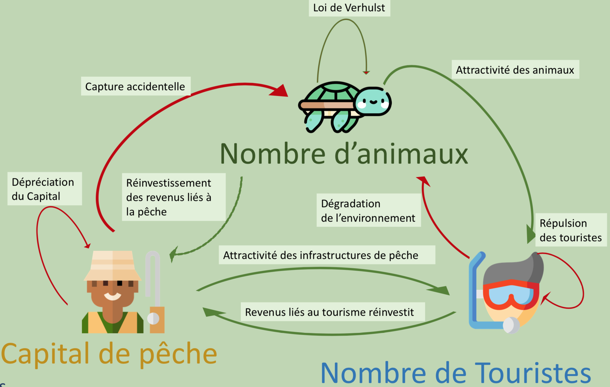

Informations sur la dynamique et choix des paramètres :
Dépreciation des infrastructures de pêche (en % par an) :
{{.ValuePeche}}
{{/*
*/}}
Attraction des touristes pour les tortues :
{{.ValueTortue}}
{{/*
*/}}
Prix du kilo de poisson (en dollard $):
{{.ValuePoisson}}
{{/*
*/}}
Taux de reproduction des tortues :
{{.ValueRepro}}
{{/*
*/}}

Continuer